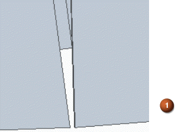
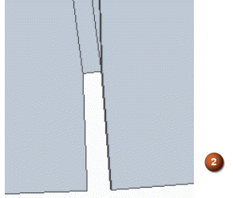

General tab (Lofted Flange)
- Bend Radius
-
Specifies the bend radius value for the feature you are constructing.
- Use Default Value
-
Uses the default value specified on the Options dialog box.
- Bend Relief
-
Specifies that you want to apply bend relief to the source face from which the flange is constructed. When you set this option, you can also specify whether the bend relief is round or square.
- Extend Relief
-
Specifies that you want to apply bend relief to the entire face when set. When cleared, the bend relief is applied only to the material adjacent to the bend. This option is useful when the flange you are constructing is recessed between adjacent faces.
- Square
-
Specifies that the internal corners of the bend relief are to be square.
- Round
-
Specifies that the internal corners of the bend relief are to be round.
- Depth
-
Specifies the depth of the bend relief.
- Width
-
Specifies the width of the bend relief.
- Neutral Factor
-
Specifies the neutral factor for the bend.
- Corner Relief
-
Specifies that you want to apply corner relief to flanges that are adjacent to the flange you are constructing. When you set this option, you can also specify how you want the corner relief applied.
- Bend Only
-
Specifies that corner relief is only applied to the bend portion of the adjacent flanges.

- Bend And Face
-
Specifies that corner relief is applied to both the bend and face portions of the adjacent flanges.

- Bend And Face Chain
-
Specifies that corner relief is applied to the entire chain of bends and faces of the adjacent flanges.

- Auto Relief
-
- Linear
-
Creates a linear cutout at the ends of the bends coming together on a corner.
- Spherical
-
Creates a spherical cutout at the end of the bends coming together on a corner.
- Trim end plates
-
Includes the neighboring plates in the relief cutout, to provide an alternative to the default results. When you select the option, it is easier to see the difference between the results.
In the following example (1), auto relief is applied with the Linear option.

In the following (2), with the Trim end plates option set, you can see the difference in the results.

Note:The size of the relief is defined by the geometry of the corner, and not user-defined. Therefore, the size of the relief can get large depending on the geometry of the bends and corner.
- Save Default
-
Saves the current settings as the default. Saved defaults will be used the next time you use this command. If you do not save the current settings as defaults, the previous default settings will be used.